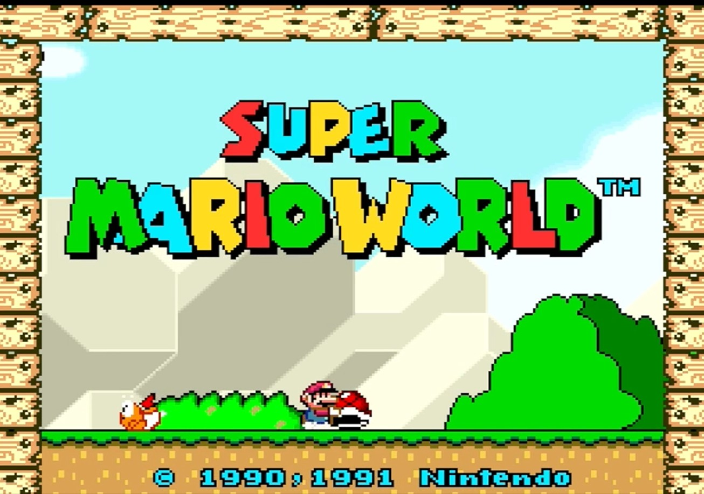
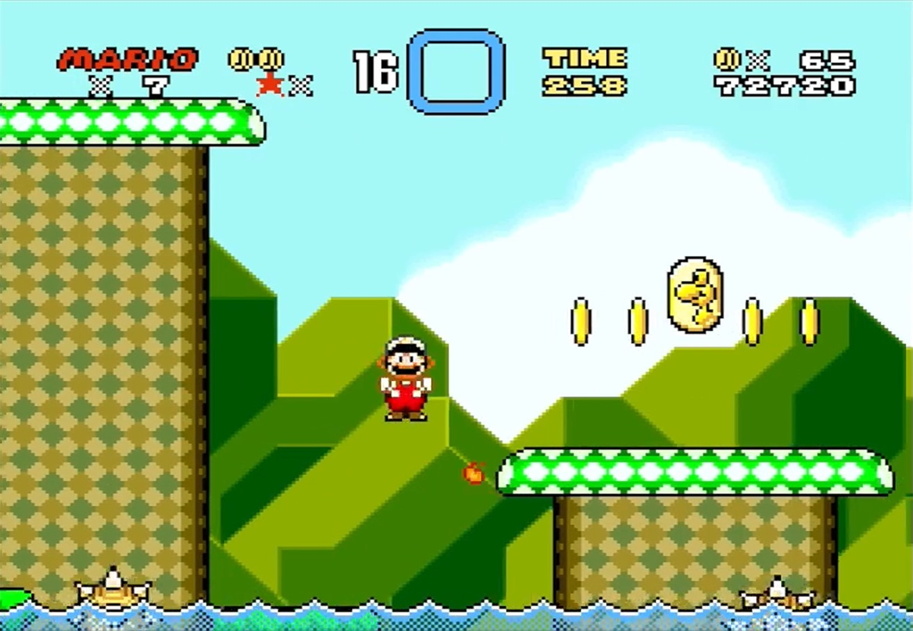
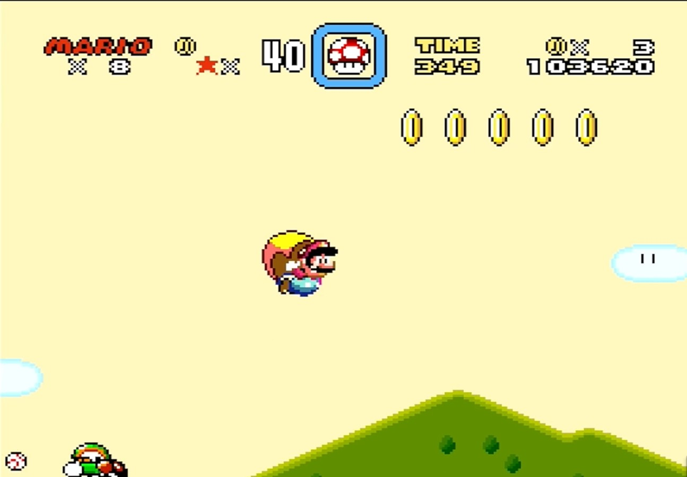
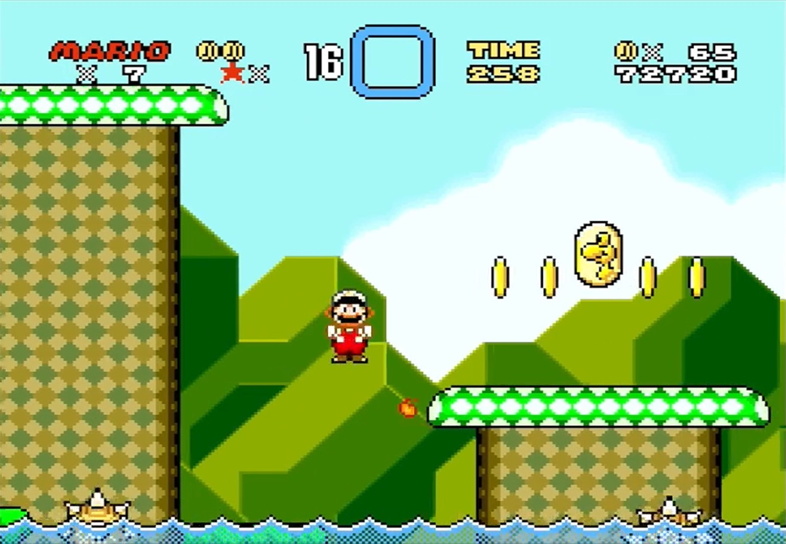
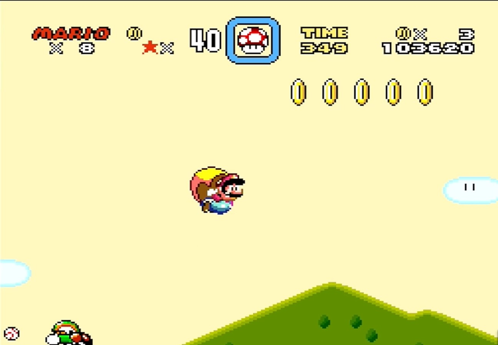

Super Mario World (1990)
Developer: Nintendo
Genre: Platformer
Super Mario World Expanded upon what was established with Mario 1 and 3, and introduced a more fluid control scheme, the most amount of levels to date for the series, the spin jump, Yoshi, the cape feather, the spare power up box, and a soundtrack that you can't help but smile to. The story follows Mario, Luigi and the princess going on vacation to Dinosaur land and Bowser set out to kidnap Princess peach again and imprison the Yoshi's. Its up to the Mario bros. to rescue Princess Peach from Bowser again.
 


